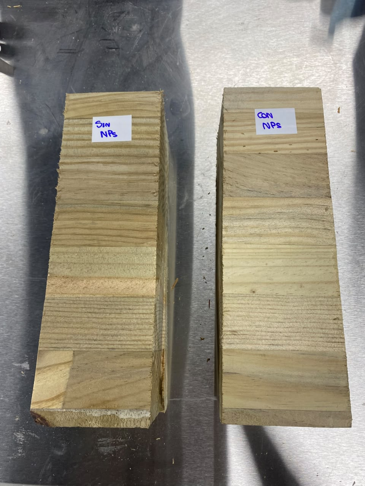
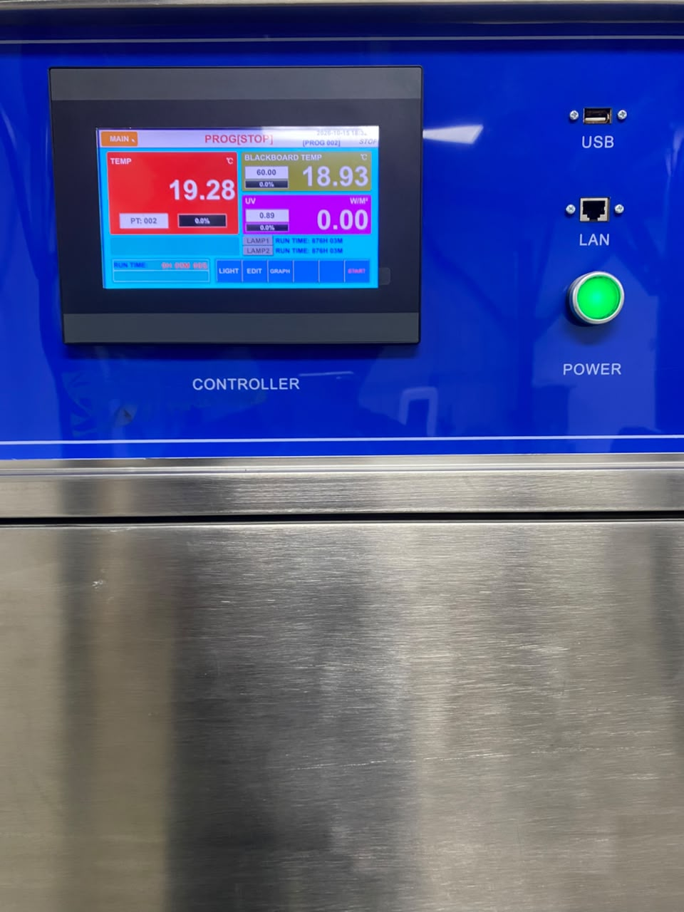
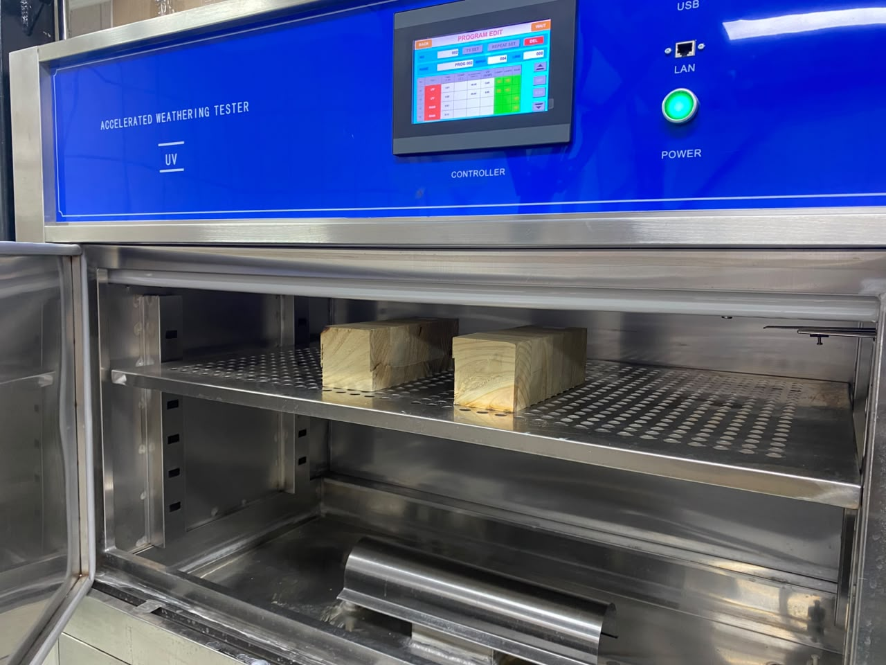

NC DOINGNanotecnología aplicada a madera
Ensayo UV acelerado
Así probamos
la protección UV
Ensayo de envejecimiento acelerado · madera con y sin nanopartículas
01
Preparación
de muestras
Dos bloques de madera de las mismas características: uno sin tratamiento y otro tratado con nanopartículas NC DOING.

Muestras antes del ensayo
02
Equipo de
ensayo UV
Cámara de envejecimiento acelerado (Accelerated Weathering Tester) con control digital de ciclo y temperatura.
Radiación UV
Ciclo controlado

Panel de control
03
Carga en
la cámara
Ambas muestras se ubican lado a lado en la bandeja, con la misma exposición a la radiación.

Muestras dentro de la cámara UV
04
Exposición
y resultado
Se compara el color de la madera a medida que aumentan las horas de exposición UV.
Izquierda · Sin NPs
Derecha · Con NPs
Menos cambio de color
con nanopartículas NC DOING
Comparación visual en ensayo UV acelerado · simulación ilustrativa